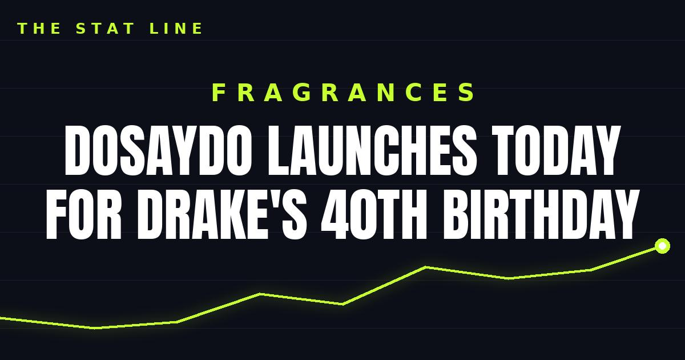

DoSayDo Launches Today for Drake's 40th Birthday
Better World Fragrance House and OVO's DoSayDo eau de parfum reaches OVO stores and OctobersVeryOwn today — a citrus aromatic built around passionfruit, cannabis, cognac, white cedarwood and roasted tonka.

Disclosure: this post contains affiliate links. I earn a commission on qualifying purchases.
The DoSayDo eau de parfum from Better World Fragrance House and OVO reaches OVO stores and OctobersVeryOwn today, timed to Drake's 40th birthday (Hypebeast).
What it is
DoSayDo is a collaboration between Better World Fragrance House and OVO, Drake's lifestyle brand. The launch lands on his 40th birthday, making the scent a birthday release as much as a new fragrance — the kind of drop where the occasion is part of the product.
The scent profile
DoSayDo is a citrus aromatic. It opens with passionfruit and cannabis, then settles on cognac, white cedarwood and roasted tonka, according to Holler.
Opening: Passionfruit, cannabis
Settle: Cognac, white cedarwood, roasted tonka
That arc — bright and tropical up top, warm and woody underneath — is the whole pitch in one sniff: a citrus aromatic that starts loud and finishes rich.
Where to get it
DoSayDo is available today at OVO stores and at OctobersVeryOwn. As a birthday-timed OVO collaboration, this is the kind of release that lives or dies on launch-day availability, so today is the day to check it.